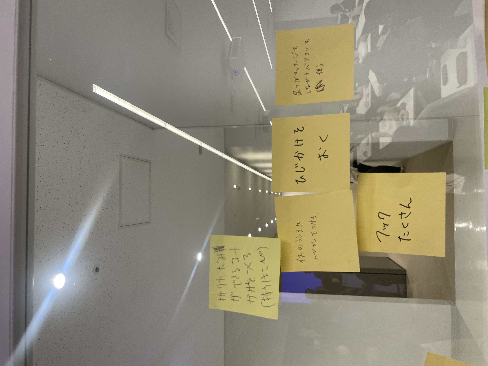

【自分たちが取り組むことにした問題の説明】

私たちは、冬になると多くの人がコートなどの上着を邪魔そうに手に抱えていたり、雨の日には教室内で傘の置き場所が困る学生に注目した。
教室や机にたくさんフックがあったら楽なのになあ。。。。。。
そこで、班で ”フック”をテーマにコートや荷物をかけられるものをつくりたいと考えた。
【自分が作ったプロトタイプ】
【説明】
フックタイプのものを作ろうと思ったが、みんなと違った形でも面白いかもと考え、机にはめられる形にした。
実際机にはまるか不安だったが、ピッタリはまったのでよかった。
百均で買ったリメイクシートと滑り止めシートを貼って、見た目と実用性を少し考えた。
実際、傘もかけることができたので上手くいったと思う。ただ、3Dプリンターを使う際に密度の設定を少し下げたのでバックなどの重い荷物は
かけると壊れてしまうかもしれない。
【使用機材】
3Dプリンター
【同じ班のメンバー】